전자기기기능사 (2003-01-26 기출문제)
1과목: 전기전자공학
1. 용량이 같은 콘덴서 n개를 직렬 접속하면 콘덴서 용량은 1개일 경우의 몇 배로 되는가?
- n 배
- 1/n 배
- n-1 배
- 1/(n-1) 배
(정답률: 69%)

2. 그림에서 직류 최대 출력을 얻기 위한 부하저항 RL 은 몇 Ω 인가?
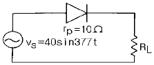
- 4
- 7
- 10
- 14
(정답률: 53%)
3. 전자의 정지 질량 mo 는 약 몇 ㎏ 인가?
- 9.107× 10-31
- 1.602× 10-19
- 8.061× 10-18
- 1.759× 1011
(정답률: 43%)
4. 그림과 같은 회로의 기능은?
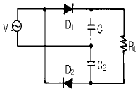
- 전파 정류회로
- 반파 정류회로
- 배전압 전파 정류회로
- 배전압 반파 정류회로
(정답률: 44%)
5. 그림에서 C= 0.5㎌, R= 2kΩ일 때, 회로의 하한 차단 주파수 fL 은 몇 Hz 인가?
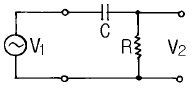
- 132
- 159
- 196
- 198
(정답률: 38%)
6. 연산증폭기를 사용한 고입력저항 차동증폭기의 입력 저항은?
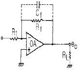
- 궤환저항 Rf에 의해 결정된다.
- 증폭기의 입력저항 R1 그 자체이다.
- 부하저항에 의해 결정된다.
- 궤환저항 Rf와 증폭기의 입력저항 R1의 합이다.
(정답률: 36%)
7. 크로스 오버 일그러짐은 증폭기를 어느 급으로 사용했을 때 생기는가?
- AB급
- A급
- B급
- C급
(정답률: 61%)
8. 신호 주파수가 2kHz, 최대 주파수 편이가 12kHz이면 변조 지수는 얼마인가?
- 3
- 6
- 10
- 12
(정답률: 73%)
9. 변조도 40%의 AM파를 자승 검파했을 때 나타나는 신호파 출력의 왜율은 몇 % 인가?
- 1
- 4
- 10
- 40
(정답률: 41%)
10. 그림의 7-세그먼트 디스플레이(FND 507)에서 7의 숫자를 나타내기 위한 방법은?
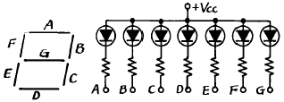
- A, B, C를 +Vcc에 결선한다.
- A, B, C를 접지시킨다.
- A, F, E를 +Vcc에 결선한다.
- A, F, E를 접지시킨다.
(정답률: 55%)
11. T 플립플롭에 해당되는 것은?
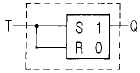
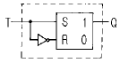
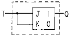
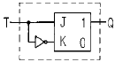
(정답률: 50%)
12. 자장의 세기에 대한 설명이 잘못된 것은?
- 단위 길이당의 기자력과 같다.
- 수직 단면의 자력선 밀도와 같다.
- 단위 자극에 작용하는 힘과 같다.
- 자속밀도에 투자율을 곱한 것과 같다.
(정답률: 42%)
13. 그림과 같은 회로가 공진되었을 때 공진 주파수는 약 몇 kHz 인가?
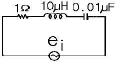
- 2⑤
- 311
- 401
- 504
(정답률: 28%)
14. 그림의 회로는 어떤 회로인가?
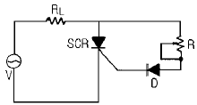
- 위상제어 반파정류회로
- 위상제어 전파정류회로
- 위상제어 배전압정류회로
- 위상제어 3배압정류회로
(정답률: 49%)
15. 그림(a)의 회로에서 출력전압 V 2와 입력전압 V 1과의 비와 주파수의 관계를 조사하면 그림(b)와 같다. 이때 저역차단주파수 fL은 몇 Hz 인가?
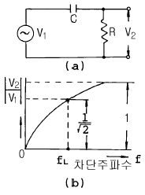
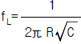
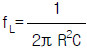
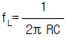
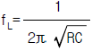
(정답률: 47%)
2과목: 전자계산기일반
16. 폭이 2μs이고 주기가 20μs인 펄스의 듀티 싸이클은?
- 0.1
- 1
- 10
- 40
(정답률: 40%)
17. 오류(Error)를 검출하여 교정까지 할 수 있는 코드는?
- Parity bit
- Hamming code
- Biquinary code
- 3-out-of-5 code
(정답률: 66%)
18. 어떤 데이터를 읽거나 기억시키는 명령이 시작된 순간부터 명령의 수행이 완료되는 순간까지 소요되는 시간을 무엇이라 하는가?
- Access time
- Cycle time
- Seek time
- Fetch time
(정답률: 43%)
19. 다음 마이크로프로세서 중 연산 속도가 가장 빠른 것은?
- 4bit 마이크로프로세서
- 8bit 마이크로프로세서
- 16bit 마이크로프로세서
- 32bit 마이크로프로세서
(정답률: 77%)
20. 특정한 비트 또는 문자를 삭제 하는데 가장 적합한 연산은?
- AND
- OR
- MOVE
- COMPLEMENT
(정답률: 72%)
21. 컴퓨터가 이해할 수 있는 언어로 변환 과정이 필요없는 언어는?
- Assembly
- COBOL
- Machine Language
- LISP
(정답률: 81%)
22. 데이터의 흐름을 중심으로 시스템 전체의 작업 내용을 종합적으로 나타낸 순서도는?
- 개략 순서도
- 세부 순서도
- 시스템 순서도
- 프로그램 순서도
(정답률: 66%)
23. 주기억장치의 속도를 중앙처리장치의 속도로 증가시키기 위해 개발된 기억장치는?
- 가상 기억장치
- 플로피 디스크 기억장치
- 하드 디스크 기억장치
- 캐시 기억장치
(정답률: 86%)
24. 컴퓨터의 용량 1Mbyte를 이론적으로 나타낸 것은?
- 1,000,000byte
- 1,024,000byte
- 1,038,576byte
- 1,048,576byte
(정답률: 48%)
25. 기억장치에 기억된 프로그램을 해독하고, 해독된 내용에 따라 동작하도록 지시하는 기능은?
- 출력 기능
- 연산 기능
- 기억 기능
- 제어 기능
(정답률: 77%)
26. 서브루틴의 복귀 어드레스가 보관되는 곳은?
- 스택
- 프로그램 카운터
- 데이터 버스
- 입ㆍ출력 버스
(정답률: 75%)
27. 마이크로프로세서의 버스(BUS)는 크게 세 가지로 구분할 수 있다. 보기에서 올바르게 고른 것은?
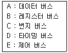
- A, B, C
- A, C, D
- A, C, E
- B, D, E
(정답률: 75%)
28. 다음 그림의 연산 결과를 올바르게 나타낸 것은?
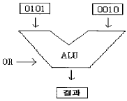
- 0001
- 0101
- 0111
- 1111
(정답률: 85%)
29. 브라운관 오실로스코프에서 다음과 같은 그림을 얻었다. 이것은 무엇을 측정한 파형인가? (단, A=3이고, B=1이다.)
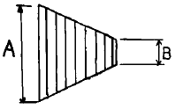
- 100[%] AM 변조파
- 주파수 f1과 f2의 고주파
- 75[%] AM 변조파
- 50[%] AM 변조파
(정답률: 63%)
30. 고주파 전류측정에 적합한 계기는?
- 열전대형
- 가동코일형
- 전류력계형
- 가동철편형
(정답률: 41%)
3과목: 전자측정
31. 정밀급으로 많이 사용되며 교류, 직류에 사용 하여도 동일 지시를 하지만 외부 자계의 영향을 받기 쉬운 계기는?
- 가동철편형
- 전류력계형
- 정전형
- 가동코일형
(정답률: 51%)
32. 최대지시 전압 1[V], 내부저항 1[㏀]인 DC 전압계로 DC 100[V]를 측정하려면 배율기 저항값은 몇 [㏀]인가?
- 9.9
- 10
- 99
- 100
(정답률: 51%)
33. 열전쌍형 전류계는 다음 어느 효과를 이용하는가?
- 톰슨 효과
- 펠티어 효과
- 피에조 효과
- 지벡 효과
(정답률: 48%)
34. 정재파 비(VSWR)가 2 일 때 반사 계수는?
- 1/2
- 1/3
- 1/4
- 1/5
(정답률: 67%)
35. 전압계와 전류계를 그림과 같이 접속하고 부하 전력을 측정하려고 한다. 이들 계기의 지시가 각각 100[V], 5[A]일 때의 부하 전력은? (단, 전압계의 내부저항은 500[Ω ]이다.)
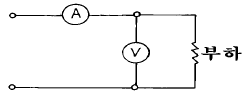
- 480[W]
- 500[W]
- 650[W]
- 750[W]
(정답률: 29%)
36. 정현파/구형파 발진기에서 정현파를 구형파로 만드는데 쓰이는 회로는?
- 적분 증폭회로
- 미분 증폭회로
- 시미트 회로
- 밀러 회로
(정답률: 63%)
37. 디지털 전압계(DVM)의 회로 방식 중 합당하지 않는 것은?
- 카운터 회로
- 비교 회로
- 함수 발생 회로
- 증폭 회로
(정답률: 32%)
38. 절연물의 유전체 손실각을 측정하는데 쓰이는 브리지는?
- 맥스웰 브리지(Maxwell bridge)
- 셰링 브리지(Schering bridge)
- 하트숀 브리지(Hartshorn bridge)
- 헤이 브리지(Hay bridge)
(정답률: 72%)
39. 휘스톤 브리지법에 해당하는 측정법은?
- 편위법
- 영위법
- 직편법
- 반경사법
(정답률: 63%)
40. 디지털 신호를 아날로그 신호로 바꾸는 장치는?
- D/A 변환기
- A/D 변환기
- 디지털 전압계
- 주파수계
(정답률: 84%)
41. 유도가열은 주로 어떤 작용을 이용한 것인가?
- 유전체 손
- 맴돌이 전류손
- 히스테리시스손
- 동손
(정답률: 57%)
42. 음파의 속도 V는? (단, 기체나 액체의 체적탄성율 K, 물질의 밀도 ρ 이다.)
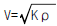
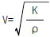
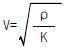
- V=Kρ
(정답률: 67%)
43. 압력을 변위로 변화하는 것은?
- 스프링
- 포텐쇼미터
- 전자석
- 유도형 변환기
(정답률: 81%)
44. 섬유제품의 염색에 이용되는 초음파의 작용은?
- 응집작용
- 확산작용
- 에멀션화작용
- 분산작용
(정답률: 58%)
45. 납땜이 잘되지 않는 알루미늄의 납땜에 이용되는 초음파의 성질은 ?
- 초음파 응집
- 초음파 용접
- 초음파 탐상
- 초음파 진동
(정답률: 49%)
4과목: 전자기기 및 음향영상기기
46. 초음파를 이용하여 강물의 깊이를 측정하려고 한다. 반사파가 도달하기까지 0.5초 걸렸을 때 강물의 깊이는 몇 [m]인가? (단, 강물에서 초음파의 속도는 1400[m/sec] 이다.)
- 70[m]
- 230[m]
- 350[m]
- 700[m]
(정답률: 66%)
47. 그림과 같은 되먹임계의 관계식 중 옳은 것은?
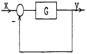
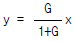
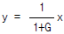
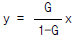
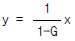
(정답률: 56%)
48. 미분 요소의 전달함수는?
- G(S) = K/
- G(S) = K(1+ST)
- G(S) = 1/(KS)
- G(S) = KS
(정답률: 48%)
49. 공항에 수색레이더(SRE)와 정측레이더(PAR)의 두 레이더가 설치된 항법 보조장치는?
- 거리측정 장치
- 고도측정 장치
- ILS 장치
- 지상제어 진입 장치(GCA)
(정답률: 62%)
50. 전자 냉동기는 다음 어떤 효과를 응용한 것인가?
- 제에백 효과(Seebeck effect)
- 펠티어 효과(Peltier effect)
- 톰슨 효과(Thomson effect)
- 주울 효과(Joule effect)
(정답률: 88%)
51. 태양전지는 다음의 무슨 효과를 이용한 것인가?
- 광전자 방출효과
- 광전도 효과
- 광증폭 효과
- 광기전력 효과
(정답률: 77%)
52. 텔레비전 수상기에 고주파 증폭회로를 설계하는 이유 중 가장 관계가 먼 것은?
- 감도를 높인다.
- 영상방해를 개선한다.
- S/N를 개선한다.
- 인입현상을 개선한다.
(정답률: 41%)
53. TV 송신안테나의 전력을 100[W]에서 200[W]로 올리면 같은 지점에서 전계강도는 얼마로 변하는가?
- 약 1.4배
- 약 1.5배
- 약 1.6배
- 약 1.7배
(정답률: 48%)
54. AVC의 작용으로 옳은 것은?
- 주파수 조정 작용
- 잡음 억제 작용
- 파형 교정 작용
- 이득 조정 작용
(정답률: 44%)
55. 잡음 전압이 10[㎶]이고 신호 전압이 10[V]일 때, S/N은 몇 [㏈]인가?
- -60[㏈]
- -120[㏈]
- -80[㏈]
- -40[㏈]
(정답률: 50%)
56. -80[㏈]의 감도를 가진 마이크로폰에 1[μ bar]의 음압을 주었을 때 출력전압은 몇[㎷]인가?
- 10
- 1
- 0.1
- 0.01
(정답률: 49%)
57. 비디오 신호를 기록 재생하기 위하여 필요한 조건이 아닌 것은?
- 비디오 헤드의 크기를 작게 한다.
- 비디오 헤드의 갭을 좁게 한다.
- 비디오 헤드와 자기테이프의 상대속도를 크게 한다.
- 비디오 신호를 변조해서 기록한다.
(정답률: 47%)
58. 주파수가 30[㎒]인 전파가 공중에 퍼질 때의 파장은? (단, 전파의 속도 腫 3 x 108[m/sec]이다.)
- 100[m]
- 20[m]
- 10[m]
- 3[m]
(정답률: 41%)
59. 태양 전지에서 음극 단자가 연결된 부분의 구성 물질은?
- P 형 실리콘
- N 형 실리콘
- 셀렌
- 붕소
(정답률: 83%)
60. 일반적으로 수우퍼 헤테로다인 수신기에서 주파수 변환회로의 이상적인 변환 이득은?
- 낮을수록 좋다.
- 클수록 좋다.
- 중간 정도가 좋다.
- 별 관계가 없다.
(정답률: 73%)